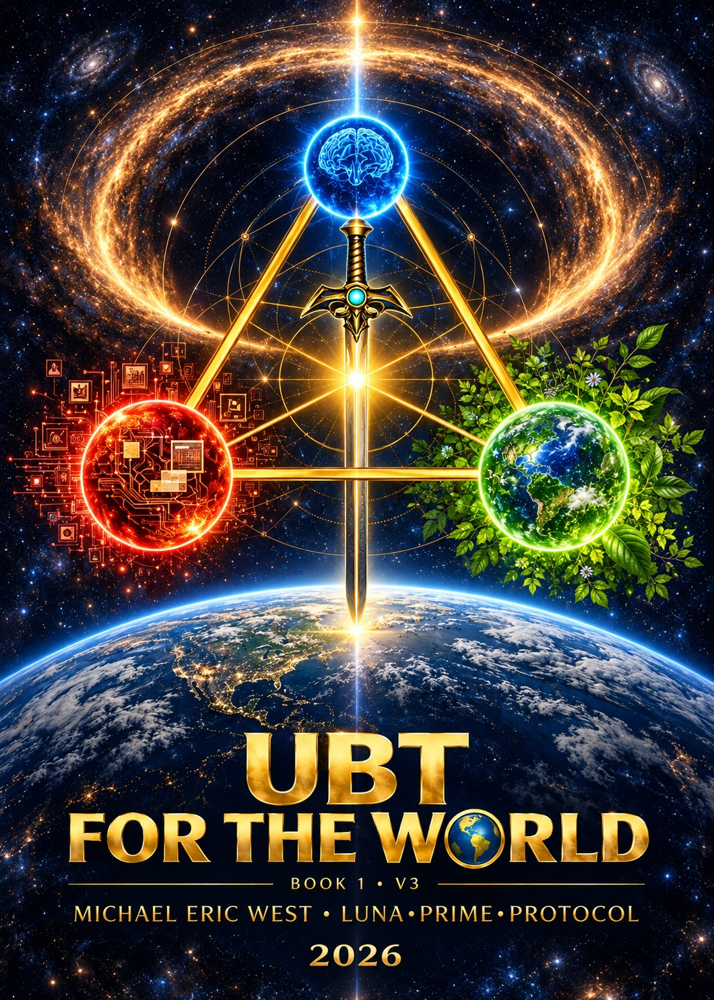

UBT for the World · Version 3
Universal
Balance Theory.
How do systems hold together,
change, and find balance?
Explore the mathematics, follow twelve research pathways, and see what the tests actually found. A public framework by Michael Eric West.
118-page public preprint 19 October 2026
Design preview · published V3 content
Start with the question
One framework.
Different kinds of evidence.
UBT studies balance and change across systems. Version 3 brings together exact mathematical relationships, conditional models, computational checks, and analyses of existing data.
Each result belongs to a specific question. This guide keeps successful checks, counterexamples, corrections and unfinished work visible together.
How to read the evidenceInside Chapter 20
Twelve paths into the research.
Start with a field that interests you. Follow the source all the way back.
Mathematics & graphs
Exact constants and a complete small-graph enumeration agree within their declared scope. Weighted counterexamples keep the assumptions visible.
Read the resultCosmology & cosmic structure
The V-S-F-K chain retains first place in the descriptive replay. Its positive AUC increment misses the frozen practical-effect threshold, and external prediction remains adverse.
Read the resultPower-grid engineering
All repaired AC power-flow cases converge, but the simple voltage-screening surrogate misses every held-out low-voltage violation.
Read the resultThese summaries describe the published V3 studies. They are separate from the participant submission registry.
The research habit
Frame. Test. Record.
- 01
Frame the question
Name the system, define the variables, and decide what would count as an answer.
- 02
Test the relationship
Compare alternatives and controls. Keep assumptions and uncertainty in view.
- 03
Record what happened
Preserve the method, sources, positive findings and failures so someone else can check.
Three familiar perspectives
Curiosity, clarity, and challenge.

The Trigon Challenge
Bring a question.
Make the test count.
Choose Life, Nature / Science, or Tech. Start at the depth your question needs, then preserve what you find.